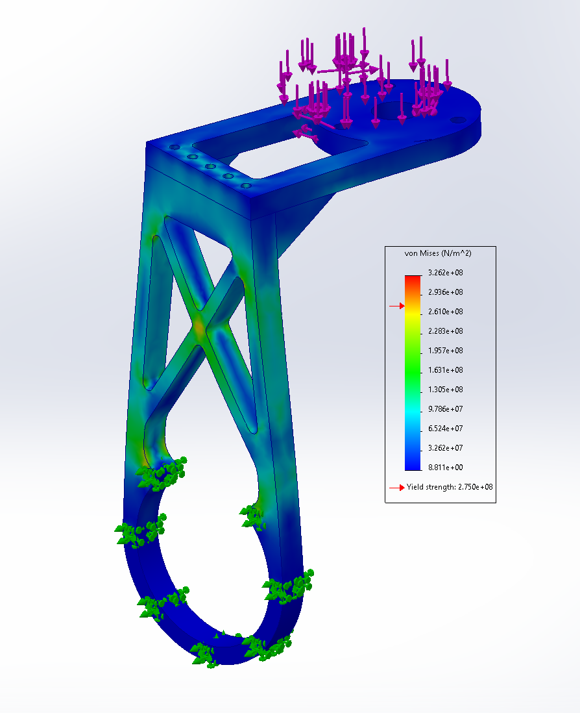
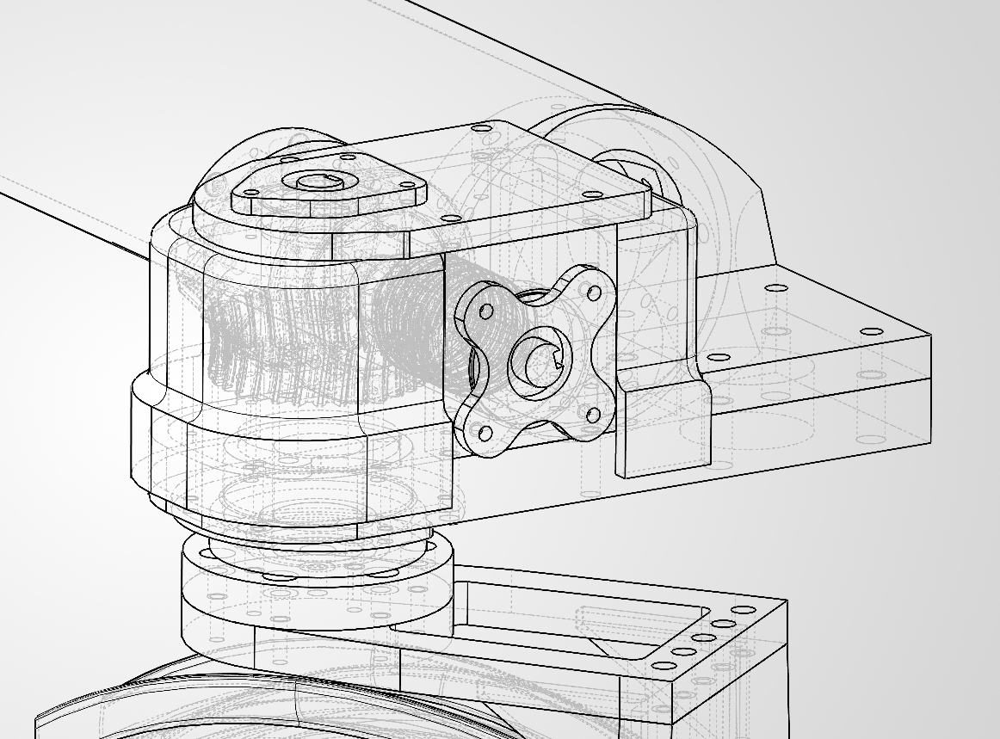
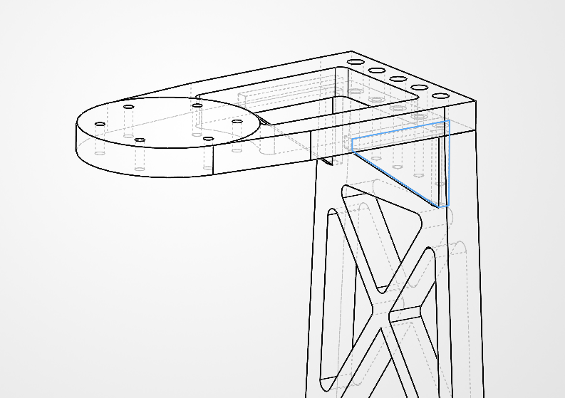

Rover Swerve
Mechanical Design / Systems Integration
CAD Viewer
Overview
Traditional fixed-angle drivetrains have limited maneuverability, particularly laterally. Increased agility during navigation and traversal tasks as well as during precision manipulation tasks is a valuable asset. Swerve drive is considered the ideal solution to these issues, though there is no standard design among teams. The design had the requirements of being compact enough to fit within the rovers 1m x 1m starting configuration, add no more than 1.5 kg per module, and provide at least 70 Nm of rotational torque. A worm drive was selected for the high gear ratio, allowing for the use of a smaller and lighter brushless DC motor, and the natrual resistance to backdriving. I performed numerous iterations on the brackets to minimize material while retaining strength and minimizing deflection in key areas. The 3D printed enclosure was designed to provide easy access to the drive gears for greasing and cleaning through the top panel while sealing tightly to exclude dust in harsh environments.
Images


